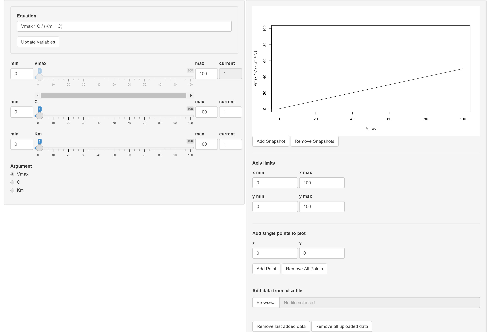

The esqlabsR packages comes with two Shiny apps: the Function
Visualizer and the Unit Converter app. They are run by the commands
startFunctionVisualizer() and
startUnitConverter(), which will open a new window with a
graphical user interface.
Function Visualizer
The Function Visualizer allows users to easily plot a chosen mathematical function for different parameter values and add any data points for comparison.
 The function can be entered in the
Equation field. It must be defined according to R syntax and
can include standard arithmetic operators -,
+, *, /, %% and
%/% as well as the functions exp,
log, sin, exp, cos,
tan, sqrt, floor,
ceiling and the constant pi. After setting the
function, the user must select the argument (the independent
variable) in the Argument field and define (constant)
values for each remaining parameter (either by slider or in the
respective current input field). The curve for the current
parameter settings can be permanently added to the output plot (Add
snapshot button) to compare it to other parameter settings. You can
zoom in on the plot by changing the axis limits.
Data points can be added to the graph in the Add single points to
plot section below the plot, they will be displayed by
+ symbol in the output. Another option for adding multiple
data points at once is by uploading data from a xls/xlsx file. The
columns for the x and y values, as well as a label for the data to
appear in the legend of the plot, can be chosen in a pop-up window.
Unit Converter
The Unit Converter app provides a graphical
interface for use of the toUnit()
function. First, choose the Dimension from the dropdown menu, then,
choose the input and output units, and type in the value to be
converted. The tool also allows to convert Concentration to
Amount quantities, e. g. from mol/l to
mg/l. For that, a molecular weight value in
g/mol must be provided in the respective field. In all
other cases, this field is deactivated.